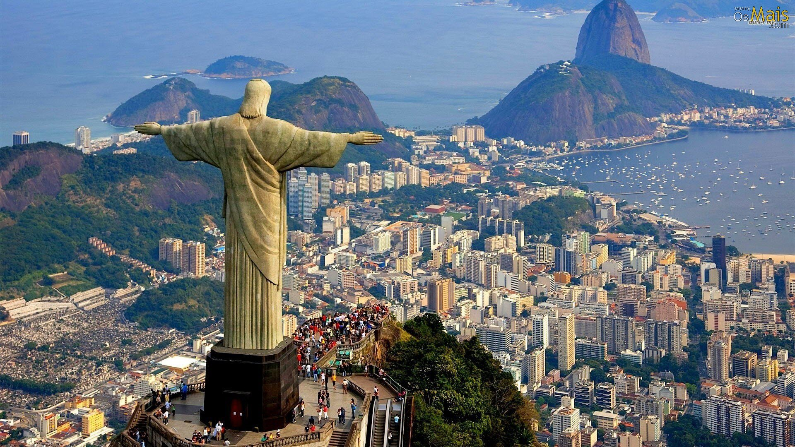
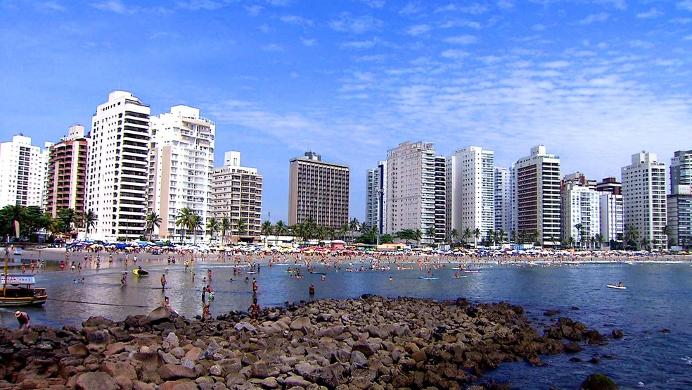
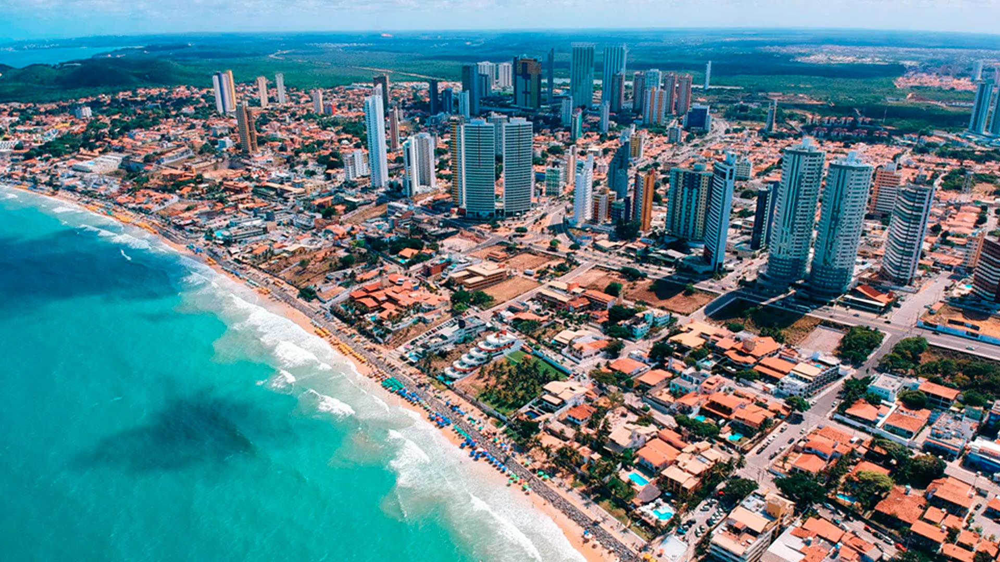
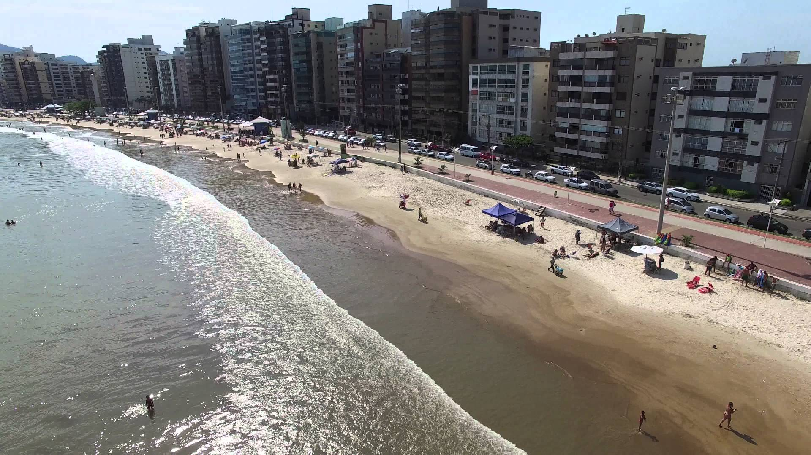

Cidades turísticas
Arraial do Cabo
Uma cidade paradisíaca que é considerada o caribe brasileiro.

Campos do Jordão
Uma cidade estilo européia é considerada a Suíça brasileira.

Rio de Janeiro
A cidade maravilhosa é uma das mais belas do planeta.
Guarujá
Uma cidade de belas praias no litoral paulista é uma das mais visitadas do Brasil.
Natal
Uma cidade de lindas praias paradisíacas do Nordeste brasileiro.
Gramado
A cidade gaúcha possui um estilo europeu e é uma das mais visitadas do Brasil.

Florianópolis
Uma cidade cheia de seus encantos com belas praias.
Guarapari
Guarapari é uma cidade com várias praias, cartões postais e uma gastronomia variada.
Foz do Iguaçu
Foz do Iguaçu e as belezas naturais das Cataratas, um dos destinos mais visitados.